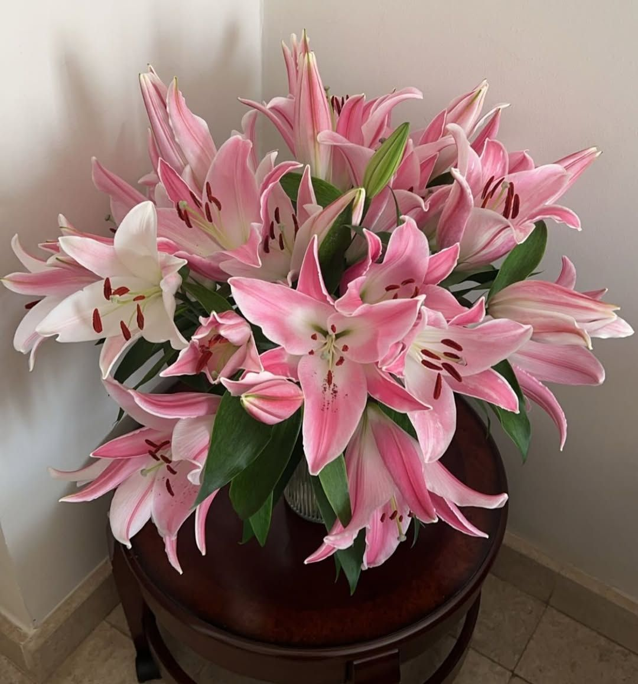

Nuestro mejor ramo:

Ramo de Lirios
Los lirios tienen pétalos grandes y vistosos, que pueden ser de diversas formas, como trompetas o copas, y colores que van desde el blanco hasta el morado, con o sin manchas o rayas